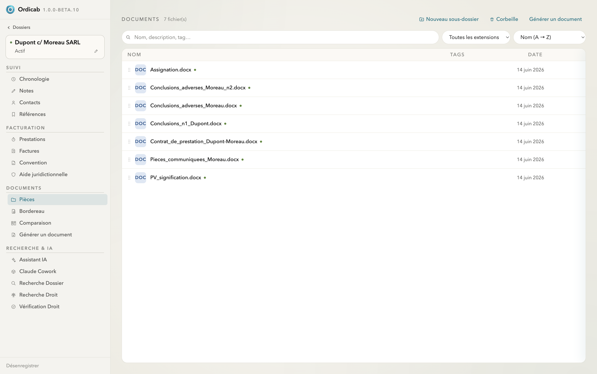
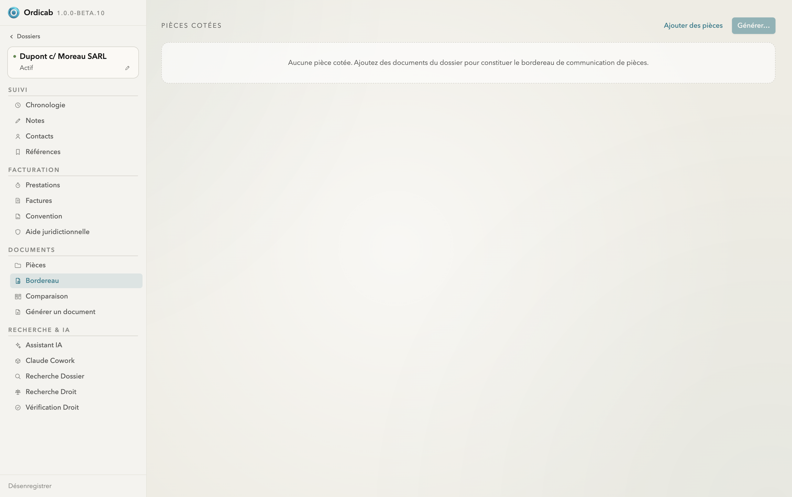
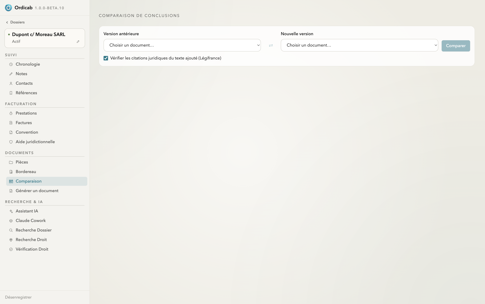

Documents & pièces
Ordicab classe et prévisualise les pièces de chaque dossier — sans jamais déplacer vos fichiers — et fournit des outils métier : bordereau de communication de pièces et comparaison de versions.
Pièces
L'onglet Pièces liste les documents associés au dossier, avec nom, tags et date. Ordicab prévisualise PDF, fichiers Word (.docx) et images directement dans l'application, et permet de les organiser en sous-dossiers. Les documents sont rattachés par référence de chemin : ils ne sont ni copiés ni déplacés.

Pièces — documents du dossier, tags et organisation, sans déplacement des fichiers
Bordereau de communication de pièces
L'onglet Bordereau constitue un bordereau de pièces cotées à partir des documents du dossier. Ajoutez les pièces à communiquer ; Ordicab les numérote, applique le tampon de cotation défini pour le cabinet et génère le bordereau.

Bordereau — constitution de la liste des pièces cotées à communiquer
Comparaison de versions
L'onglet Comparaison met en regard deux documents (par exemple une version antérieure et une nouvelle version de conclusions) et met en évidence les différences. Une option permet de vérifier les citations juridiques du texte ajouté via Légifrance.

Comparaison — confrontation de deux versions, avec vérification optionnelle des citations
Suivant : Modèles & génération →